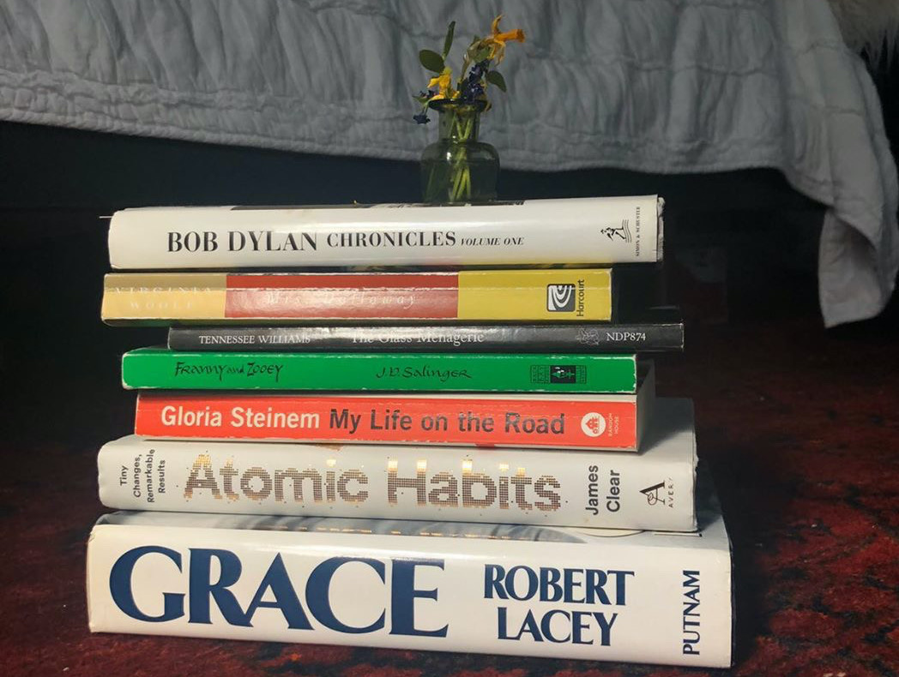

Claudia Langella
Claudia Langella is a college student majoring in Literary Studies: Writing at Eugene Lang College of Liberal Arts. She has spent her quarantine doing the readings that she normally has to put off due to her other responsibilities such as reading assigned books for her classes. While it might seem like it’s the same as always, there is certainly a difference from the assigned readings to these, such as Gloria Steinem’s “My Life on the Road” that she provides an excerpt for which talks about Steinem dealing with the death of her friend Wilma Mankiller, the first female Principal Chief of the Cherokee Nation.
